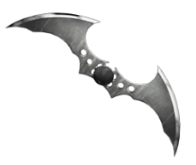

Au nom de ses parents assassinés, Bruce Wayne mène une guerre
éternelle contre les criminels de Gotham City. Il est vengeur. Il est
la nuit.
Il est Batman.
BATMAN AU CINÉMA
Le personnage de Batman est un super héros de l’univers de DC
Comics. Il a été créé par le dessinateur Bob Kane et le scénariste
Bill Finger et apparaît pour la première fois dans le comic book
Detective Comics en 1939. Batman se différencie de Superman, alors
héros majeur de DC, car il n’a aucun pouvoir. Il sera porté au
cinema pour la première fois en 1943 par Lewis Wilson et bénéficiera
de nombreux reboot, donnant l’occasion à de multiples acteurs
d’interpréter l’homme chauve-souris. Voici les trois derniers :
Robert Pattinson(2022)Christian Bale(2006-2008-2012)Ben Affleck(20016-2017/2020-2023)
NEMESIS

Batman souhaite éradiquer la criminalité de Gotham. C’est pourquoi,
il affrontera la plupart du temps, des vilains sans capacités
surnaturelles mais particulièrement violents ou psychopathes. Avec
son introduction dans la Justice League il aura l’occasion de se
mesurer à des antagonistes qui défient l’imagination et les lois de
la physique. Parmi les derniers ennemis emblématiques que nous avons
pu voir au cinéma, on retrouve :
The Riddler- Paul Dano(2022)Le Joker - Heath Ledger(2008)Darkseid - Ray Porter(2022)
ALLIES
Alfred est le majordome des Wayne. A leur mort il s’occupe de
l’éducation du jeune Bruce avant de l’assister dans son rôle du
Batman. Ce dernier rencontrera Catwoman dès le premier numéro des
aventures de l’homme chauve-souris en 1940. Tantôt ennemie tantôt
alliée la jeune femme fatale fera tourner la tête de Batman à
maintes reprises. Du côté de la police, Bruce pourra compter sur
l’aide infaillible de James Gordon, “Jim”, qui désire lui aussi
nettoyer sa ville de la criminalité qui y règne.
Alfred Pennyworth - Michael Cain(2006 - 2008 - 2012)Zoé Kravitz(2008)James Gordon(2014-2019)
JUSTICE LEAGUE
Lorsque la Terre est menacée les plus grands super-héros s’allient
pour la protéger. Ils doivent cependant apprendre à se faire
confiance mutuellement et à faire équipe ce qui ne sera pas chose
aisée. Ensemble ils forment la Justice League, les plus grands
super-héros de la Terre, ceux vers qui le monde entier se tourne
lorsque les menaces extraterrestres ou surnaturelles menacent son
existence.
MULTIMEDIA
ACTION,ADVENTURE
Batman Begins
IMDB:
8.2
Le jeune Bruce Wayne assiste impuissant au meurtre de ses
parents. Profondément traumatisé, il grandit obnubilé par un
désir de vengeance. La Ligue des ombres, une secte de
guerriers ninja dirigée par Ra's al Ghul, se chargera de son
entraînement. De retour chez lui à Gotham, avec l'aide de son
majordome Alfred Pennyworth, Bruce Wayne se lance alors dans
la lutte contre le crime sous le nom de Batman.
PRENONS CONTACT
La seule façon raisonnable de vivre en ce bas monde, c'est en dehors
des règles.
The Dark Knight : Le Chevalier Noir- Le Joker à Batman
(2008)